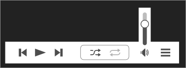

Elisa UI ideas/mockups
Here's some crude mockups for some ideas on how to improve Elisa's UI
Player Bar
- Move menu to the bar
- Remove circles around buttons
- Move shuffle/repeat to header
- Collapse volume slider
- Make player bar slightly slimmer
Responsiveness
The time bar can adjust itself as the window gets thinner. Eventually
the bar can disappear and leave only the text. Finally in an extremely
small window the bar and text can go away completely.

Playlist/Queue
- Rename to Playlist (easier to understand, and separates it from the now playing panel)
- Add amount of playtime (very important when you want to dive into a long work session :) )
- Make buttons more like the other views: "Show Current | Manage" (drop down for load/save/clear)
- Align titles with tracks
- Dragging the album title drags all the songs below it too (easier to re-organize the list)
- Hide stars when there is no rating (0 stars). This avoids visual clutter
- Don't show stars if they overlap the songs name (or force it to elide)
- Keep the stars in light grey so they don't conflict with the song name/time
Note: I messed up the font sizes for these screens and the text looks a bit larger than it should be
Responsiveness
If it becomes too thin, the buttons can go into another row and the
cover art thumbs can be hidden.
Now playing view
- Show metadata on the side pane
- Make artists name, album, genre, year and file location hyperlinks to open those things
- Adding more info is pretty simple, or even tabs for other stuff like lyrics
[idea] No borders
Remove border and background color of sidebar and possibly of playlist too. The highlight color is used for the text instead of the background.
Responsiveness
The sidebar can be reduced to icons if the window becomes too thin